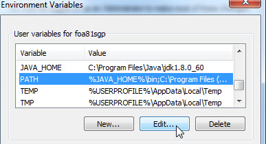
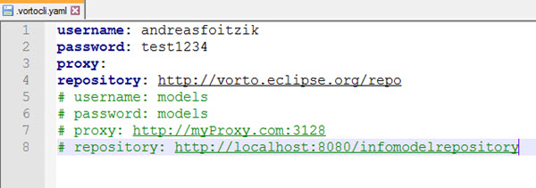

Vorto Command Line Interface (CLI) Tool
Overview
Vorto Command Line Interface (CLI) tool is REST-Client that allows you, to access your specified repository with all Vorto related functionalities.
Basic Structure
The CLI-Tool is based on a simple structure.
It consists of a Command Line Interface as well as a .yaml file, that stores all necessary configuration properties like Username, Password, Proxy and Repository.
Installation
First of all, you have to download the CLI Tool from the download page and save it to any working directory.
A very convenient way to use the CLI Tool is, to add the path of the directory into the system’s environment PATH variable. Once you did this, you can call the CLI-Tool from any directory.

Before you can use the CLI Tool as a REST Client, you need to initialize basic preferences. The preferences are stored in a C:\Users\{$username}\.vortocli.yaml.file, which is located in your home directory.
You have to setup vorto via vorto config. If you want to initialize vorto with additional values (or change them afterwards) like -username, -password, -proxy and -repo, then you can extend the vorto config command with four additional flag parameters -username, -password, -proxy and -repo, or you can edit the .vortocli.yaml file via text editor.
vorto config -username andreas -password test1234 -repo http://vorto.eclipse.org/repo
Congratulations! - Setup is done and you are now able to use the Vorto CLI Tool.

CLI Commands
Now let’s continue how you can really gain a benefit from the CLI Tool.
The Vorto CLI Tool provides a scope of seven different Vorto Commands to interact with your specified Repository.
Each of them is based on a similar structure and offers a unique functionality.
vorto [command] [-flag1 parameter1 -flag2 parameter2 ... ]
| Command | Description | Example |
|---|---|---|
| vorto config | With the vorto config command you do the basic CLI Tool setup. Additional flag parameters:
|
vorto config -username andreas -password test1234 -repo http://vorto.eclipse.org/repo |
| vorto help | To get more familiar with the CLI Tool commands, it's a good approach to call the vorto help command. vorto help lists you all other possible commands, including flag parameters and examples. |
vorto help |
| vorto query | After everything is successfully setup, you are able to access the Repository. Via vorto query you can query all models of your Repository. The result of this command contains all models in the Repository. |
vorto query "*" |
| vorto info | If you are now interested in a certain model and you want to get more information from this specific model, you can use vorto info to get it. The result of this command is a detailed view of the requested model. |
vorto info examples.informationmodels.sensors.TI_SensorTag_CC2650:1.0.0 |
| vorto download | Furthermore you can start working with a certain model locally, when you download it via vorto download. To open and to work with it, you can use any text editor to modify this certain model and you can even upload it again. Via the flag -outputPath can you specify a download directory. Additional flag parameters:
|
vorto download examples.informationmodels.sensors.TI_SensorTag_CC2650:1.0.0 -outputPath D:\models |
| vorto generators | If you want to generate platform specific code, you can get a short overview of all active code generators via vorto generators. | vorto generators |
| vorto generate | Afterwards you can generate vorto generate your platform specific code (specified by -generatorKey) in a very convenient way. Additional flag parameters:
|
vorto generators |
| vorto share | Additionally to all this access functionality, you are also able to share your models. Therefore you either have to deposit your credentials in the .vortocli.yaml file or you have to pass them as additional parameters. Additional flag parameters:
|
vorto share D:\Models\ TI_SensorTag_CC2650\src\models\ TI_SensorTag_CC2650.infomodel vorto share D:\Models\ TI_SensorTag_CC2650\src\models\ TI_SensorTag_CC2650.infomodel -username andreas -password test1234 |